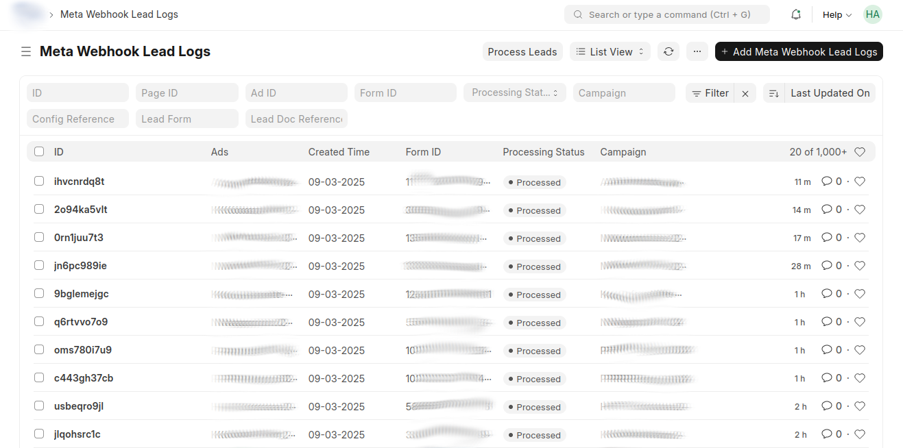
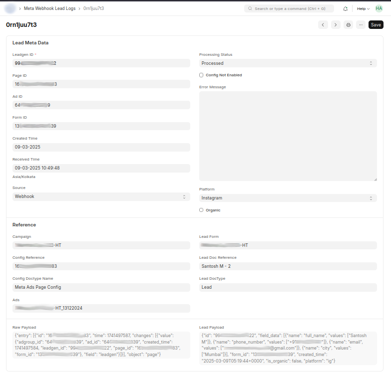
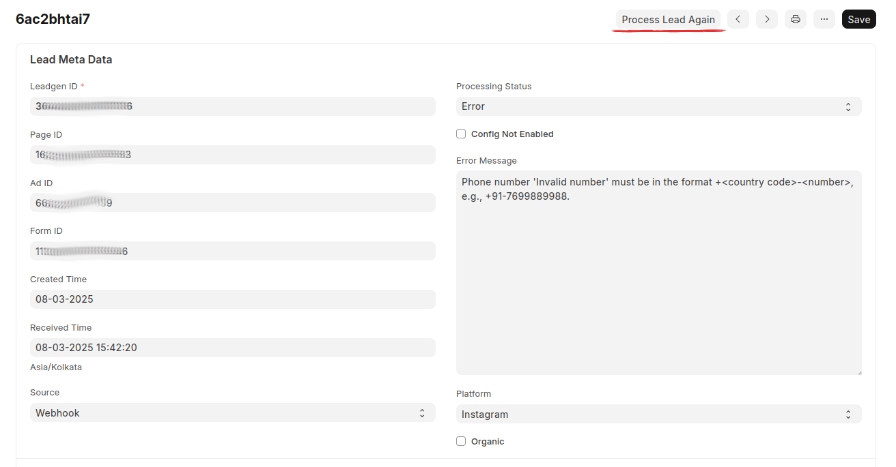
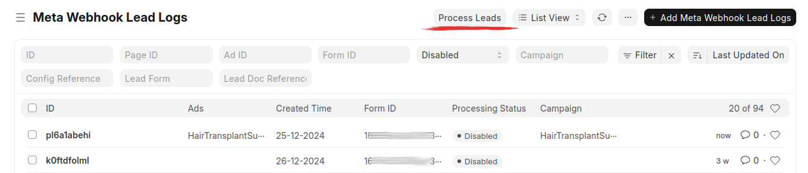

Meta Webhook Lead Logs
Meta Webhook Lead Logs in OneLead¶
The Meta Webhook Lead Logs serve as the central logging system for all incoming leads from Meta (Facebook & Instagram). This ensures that no lead is lost, even if the system is not configured at the time of lead reception.
This section covers:
- Field explanations
- Processing statuses
- Error handling
- Lead reprocessing
- Lead sources (Webhook, Import, Polling - Upcoming)
- Organic leads
- System robustness and lead loss prevention
Meta Webhook Lead Leads

Lead Log Fields and Their Roles¶
Each lead log entry contains multiple fields that provide details about the lead and its processing status.
Lead Metadata (Received from Meta)¶
| Field | Description |
|---|---|
| Leadgen ID | Unique ID assigned by Meta to identify the lead. |
| Page ID | The Meta Page from which the lead was generated. |
| Ad ID | The Ad associated with the lead (if available). |
| Form ID | The Meta Lead Form ID used for lead collection. |
| Created Time | The time when the lead was created on Meta’s platform. |
| Received Time | The time when OneLead received the lead from Meta. |
Processing & Configuration¶
| Field | Description |
|---|---|
| Source | How the lead was received (Webhook, Import, Polling - Upcoming). |
| Platform | The platform where the lead was generated (Facebook, Instagram). |
| Processing Status | The status of the lead (Pending, Processed, Error, etc.). |
| Config Reference | Links the lead to the Meta Ads Page Config used for processing. |
| Lead Form | The name of the lead form used in Meta. |
| Lead Doc Reference | The mapped Lead Doctype in Frappe (if configured). |
Error Handling & Data¶
| Field | Description |
|---|---|
| Error Message | Describes any error that occurred during processing. |
| Raw Payload | Stores the raw JSON data received from Meta in Webhook. |
| Lead Payload | Stores lead data fetched from Meta based on Leadgen ID. |
Example: Lead Log Detail

Processing Statuses¶
Each lead in the Meta Webhook Lead Logs can have one of the following statuses:
Pending¶
- The lead has been received but has not yet been processed.
- This happens when a webhook is received, and the system has not yet executed the mapping and entry creation.
Unconfigured¶
- The system could not find the "Meta Ads Page Config" for the Page ID in the webhook.
- OR, the Page ID was found but the Form ID was not listed under the mapping child table.
- Solution: Ensure that the page is configured, and the lead form is mapped.
Disabled¶
- The system found the Meta Ads Page Config, but it is not enabled.
- Leads from this page will not be processed unless enabled.
- Solution: Go to Meta Ads Page Config and enable the configuration.
Processed¶
- All requirements were met (configuration exists, mapping is correct).
- The lead was successfully mapped and entered into the Lead Doctype.
- The lead is now available for CRM use.
Error¶
- An unexpected issue occurred, preventing lead entry.
- Common Error Scenarios:
- Invalid Contact Number: The phone number does not follow the required format.
- Invalid Data Format: For example, names containing special characters like
< >. - Missing Mandatory Fields: The lead form may not contain all required fields.
- Unexpected Meta Response: Sometimes, Meta sends partial or incorrect data sent from user.
- Solution:
- Use validation hooks or formatting functions to fix data issues.
- Manually correct data and mark as processed lead.
- Mark unrecoverable leads as Loss. (TODO)
Example: Error Leads

Loss (New Status) (TODO)¶
- Some leads cannot be recovered, but they do not qualify as an "Error".
- These leads will have incorrect/incomplete data that cannot be fixed by system logic.
- Example: Invalid or missing contact details.
- Action: Manually mark them as "Loss", so they don’t appear as errors.
Reprocessing Leads¶
If a lead is not in a Pending or Processed state, it can be reprocessed.
How to Reprocess Leads?¶
Process Lead Again (Individual)¶
- Open a lead log entry.
- Click "Process Lead Again".
Bulk Reprocess¶
- Select multiple lead logs in List View.
- Click "Process Leads" (Runs as a background job).
Process Leads

Lead Sources¶
There are three ways a lead can be received in OneLead:
Webhook (Real-Time)¶
- The most common and recommended method, can not be turned off.
- Leads are pushed from Meta when a user submits a form.
Import (Manual)¶
- Leads can be imported via the Import Tool, requiring only six key details:
- Leadgen ID
- Page ID
- Ad ID
- Form ID
- Created Time
- Received Time
- Helpful for historical data processing or bulk lead uploads.
- In cases where your system was down or for some issue you it could not receive hooks you can import manually.
Polling (Upcoming Feature)¶
- Will allow fetching leads on Interval from Meta.
Organic Leads¶
- Leads that do not originate from an ad will have:
- No Ad ID
- A platform value (Facebook or Instagram)
- These are non-paid leads, often from organic post interactions.
System Robustness and Lead Loss Prevention¶
OneLead is designed to capture every lead received from Meta, regardless of: - Whether the page is configured or not. - Whether the page has been fetched or not. - Whether the user token is valid or expired.
Meta Webhook Lead Logs will store everything received.
Leads can be processed later after configuration is updated.
No leads are lost, unless the system is completely down when Meta sends the webhook.
Lead Loss Scenario
The only case where a lead is lost is if OneLead is completely unreachable when Meta sends the webhook.
Best Practices for Error Handling¶
- Validate lead data before submission.
- Use helper functions to format and clean data before processing.
- Regularly check the error logs and take corrective action.
- Manually review and correct invalid leads to ensure no opportunities are lost.
Next Steps¶
Still Facing Issues?¶
Raise an issue on GitHub:
OneLead Issues